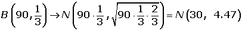
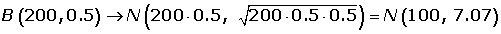

Ejercicios de la distribución normal
1Si X es una variable aleatoria de una distribución N(µ, σ), hallar: p(µ−3σ ≤ X ≤ µ+3σ)
2En una distribución normal de media 4 y desviación típica 2, calcular el valor de a para que: P(4−a ≤ x ≤ 4+a) = 0.5934
3En una ciudad se estima que la temperatura máxima en el mes de junio sigue una distribución normal, con media 23° y desviación típica 5°. Calcular el número de días del mes en los que se espera alcanzar máximas entre 21° y 27°
4La media de los pesos de 500 estudiantes de un colegio es 70 kg y la desviación típica 3 kg. Suponiendo que los pesos se distribuyen normalmente, hallar cuántos estudiantes pesan:
1Entre 60 kg y 75 kg
2Más de 90 kg
3Menos de 64 kg
464 kg
564 kg o menos
5Se supone que los resultados de un examen siguen una distribución normal con media 78 y desviación típica 36. Se pide:
1¿Cuál es la probabilidad de que una persona que se presenta el examen obtenga una calificación superior a 72?
2Calcular la proporción de estudiantes que tienen puntuaciones que exceden por lo menos en cinco puntos de la puntuación que marca la frontera entre el Apto y el No-Apto (son declarados No-Aptos el 25% de los estudiantes que obtuvieron las puntuaciones más bajas)
3Si se sabe que la calificación de un estudiante es mayor que 72 ¿cuál es la probabilidad de que su calificación sea, de hecho, superior a 84?
6Tras un test de cultura general se observa que las puntuaciones obtenidas siguen una distribución una distribución N(65, 18). Se desea clasificar a los examinados en tres grupos (de baja cultura general, de cultura general aceptable, de excelente cultura general) de modo que hay en el primero un 20% la población, un 65% el segundo y un 15% en el tercero. ¿Cuáles han de ser las puntuaciones que marcan el paso de un grupo al otro?
7Varios test de inteligencia dieron una puntuación que sigue una ley normal con media 100 y desviación típica 15
1Determinar el porcentaje de población que obtendría un coeficiente entre 95 y 110
2¿Qué intervalo centrado en 100 contiene al 50% de la población?
3En una población de 2500 individuos ¿cuántos individuos se esperan que tengan un coeficiente superior a 125?
8En una ciudad una de cada tres familias posee teléfono. Si se eligen al azar 90 familias, calcular la probabilidad de que entre ellas haya por lo menos 30 tengan teléfono
9En un examen tipo test de 200 preguntas de elección múltiple, cada pregunta tiene una respuesta correcta y una incorrecta. Se aprueba si se contesta a más de 110 respuestas correctas. Suponiendo que se contesta al azar, calcular la probabilidad de aprobar el examen
10Un estudio ha mostrado que, en un cierto barrio, el 60% de los hogares tienen al menos dos televisores Se elige al azar una muestra de 50 hogares en el citado barrio. Se pide:
1¿Cuál es la probabilidad de que al menos 20 de los citados hogares tengan cuando menos dos televisores?
2¿Cuál es la probabilidad de que entre 35 y 40 hogares tengan cuando menos dos televisores?
- 1
- 2
- 3
- 4
- 5
- 6
- 7
- 8
- 9
- 10
Ejercicio 1 resuelto
Si X es una variable aleatoria de una distribución N(µ, σ), hallar: p(µ−3σ ≤ X ≤ µ+3σ)

Es decir, que aproximadamente el 99.74% de los valores de X están a menos de tres desviaciones típicas de la media.
Ejercicio 2 resuelto
En una distribución normal de media 4 y desviación típica 2, calcular el valor de a para que: P(4−a ≤ x ≤ 4+a) = 0.5934


Ejercicio 3 resuelto
En una ciudad se estima que la temperatura máxima en el mes de junio sigue una distribución normal, con media 23° y desviación típica 5°. Calcular el número de días del mes en los que se espera alcanzar máximas entre 21° y 27°

Ejercicio 4 resuelto
La media de los pesos de 500 estudiantes de un colegio es 70 kg y la desviación típica 3 kg. Suponiendo que los pesos se distribuyen normalmente, hallar cuántos estudiantes pesan:
Soluciones:1Entre 60 kg y 75 kg


2Más de 90 kg


3Menos de 64 kg
464 kg
564 kg o menos
Ejercicio 5 resuelto
Se supone que los resultados de un examen siguen una distribución normal con media 78 y desviación típica 36. Se pide:
Soluciones:1¿Cuál es la probabilidad de que una persona que se presenta el examen obtenga una calificación superior a 72?

2Calcular la proporción de estudiantes que tienen puntuaciones que exceden por lo menos en cinco puntos de la puntuación que marca la frontera entre el Apto y el No-Apto (son declarados No-Aptos el 25% de los estudiantes que obtuvieron las puntuaciones más bajas)
p class="b">
3Si se sabe que la calificación de un estudiante es mayor que 72 ¿cuál es la probabilidad de que su calificación sea, de hecho, superior a 84?

Ejercicio 6 resuelto
Tras un test de cultura general se observa que las puntuaciones obtenidas siguen una distribución una distribución N(65, 18). Se desea clasificar a los examinados en tres grupos (de baja cultura general, de cultura general aceptable, de excelente cultura general) de modo que hay en el primero un 20% la población, un 65% el segundo y un 15% en el tercero. ¿Cuáles han de ser las puntuaciones que marcan el paso de un grupo al otro?


Baja cultura hasta 49 puntos.
Cultura aceptable entre 50 y 83.
Excelente cultura a partir de 84 puntos.
Ejercicio 7 resuelto
Varios test de inteligencia dieron una puntuación que sigue una ley normal con media 100 y desviación típica 15
Soluciones:1Determinar el porcentaje de población que obtendría un coeficiente entre 95 y 110

2¿Qué intervalo centrado en 100 contiene al 50% de la población?


3En una población de 2500 individuos ¿cuántos individuos se esperan que tengan un coeficiente superior a 125?


Ejercicio 8 resuelto
En una ciudad una de cada tres familias posee teléfono. Si se eligen al azar 90 familias, calcular la probabilidad de que entre ellas haya por lo menos 30 tengan teléfono

Ejercicio 9 resuelto
En un examen tipo test de 200 preguntas de elección múltiple, cada pregunta tiene una respuesta correcta y una incorrecta. Se aprueba si se contesta a más de 110 respuestas correctas. Suponiendo que se contesta al azar, calcular la probabilidad de aprobar el examen


Ejercicio 10 resuelto
Un estudio ha mostrado que, en un cierto barrio, el 60% de los hogares tienen al menos dos televisores Se elige al azar una muestra de 50 hogares en el citado barrio. Se pide:
Soluciones:1¿Cuál es la probabilidad de que al menos 20 de los citados hogares tengan cuando menos dos televisores?
2¿Cuál es la probabilidad de que entre 35 y 40 hogares tengan cuando menos dos televisores?

 Ejercicios
Ejercicios